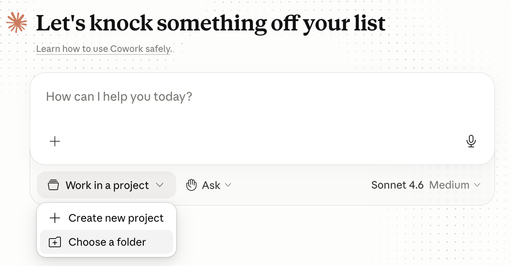
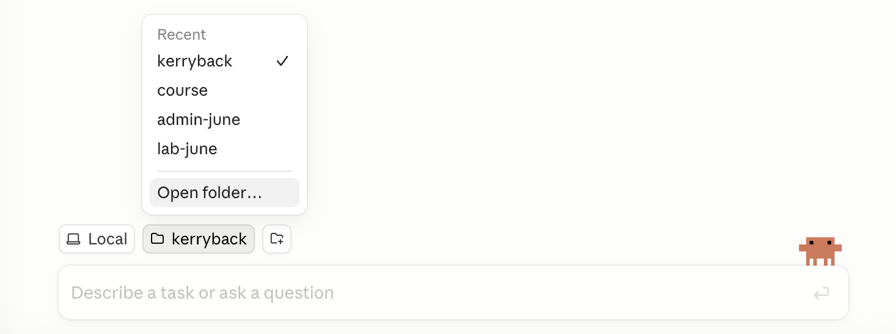
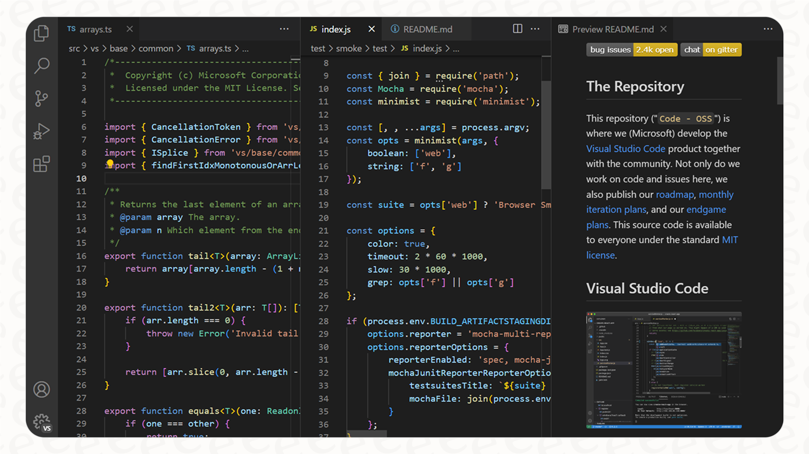
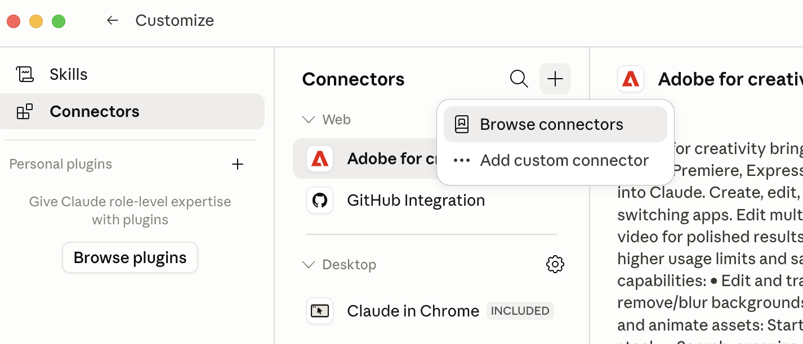

1. Intro to Claude
Rice Business 2026
Rice Business
Same Claude, Many Doors
One model, many surfaces
- The same Claude runs behind a chat window, inside Excel, and in your terminal
- What changes is where it runs and what it can touch
- A Pro account ($20/month) opens all of it
Today’s map
- The three modes: Chat, Cowork, Code
- Claude Code in the terminal and in VS Code
- Claude for Excel, skills, connectors, and plugins
The goal is to know which door to walk through for a given job — and what each one lets Claude do on your behalf.
The Three Modes
Chat, Cowork, Code
Chat
- The familiar chatbot
- Runs Python in the cloud, in a sandbox
- Upload files, download results — nothing on your machine is touched
Cowork
- Agentic work on your files
- Runs in a virtual machine mounted on a folder you choose
- Nothing outside that folder is visible or touchable
Code
- Claude Code, on your computer directly
- Runs terminal commands, installs software, reaches the internet
- The folder you open is where it starts — it can work beyond it
Same Claude, three places it can run code: the cloud, a VM, or your machine. The mode decides what it can see and touch — which is a security decision as much as a convenience one.
What Each Mode Can Touch
| Capability | Chat | Cowork | Code |
|---|---|---|---|
| Run code | ✓ (cloud) | ✓ (VM) | ✓ (your machine) |
| Web access | ✓ | — | ✓ |
| Read your local files | upload only | folder only | ✓ |
| Write / edit local files | — | folder only | ✓ |
| Run terminal commands | — | — | ✓ |
| Skills, connectors | ✓ | ✓ | ✓ |
Reach grows left to right — and so does what you are trusting it with. Match the mode to the task and to the sensitivity of the data.
Opening a Folder
In Cowork and Code, you open a folder to give Claude access to your local files.
Cowork
Click Work in a project at the bottom of the chat, then Choose a folder

Code
Click the folder icon in the toolbar, or use the dropdown → Open folder…

Claude Code
In the Terminal and in VS Code
The claude command
- Claude Code is also a terminal program — type claude and start working
- Same engine as the Code tab in Claude Desktop
- This is how developers run it, and how we deploy things
The VS Code extension
- VS Code is the standard free code editor
- The Claude extension puts Claude in a side panel, aware of your open files
- It shows proposed edits as a diff you approve before anything changes
For research work you will mostly live in VS Code with Claude beside you — editing scripts, running notebooks, and reviewing every change before it lands.
Claude Editing Your Code

Claude proposes a change; you see exactly what it added and removed, in green and red, and accept or reject it. Nothing is edited silently.
Claude for Excel
A Chat Panel Inside Excel

The Claude add-in puts a chat panel directly inside Excel. You describe what you want — formulas, tables, charts, an amortization schedule — and Claude builds it in the active sheet. No Python, no terminal. Install it from the Microsoft Office Add-ins store.
Skills
Reusable, One-Command Workflows
What a skill is
- A saved procedure Claude follows for a specific kind of task
- A folder with a
SKILL.mdfile — plain instructions, optional scripts - Write “how to do X well” once; every future run follows it
Built in and shareable
- Anthropic ships skills for Excel, Word, PowerPoint, and PDF
- You can add your own or install others’
- Same skill works in Claude.ai, Claude Code, and the add-ins
A skill is codified expertise, not a smarter model — the subject of a whole session later. Here, just know the three ways they fire.
Three Ways a Skill Fires
Slash command
You type /critique or /pptx to invoke it directly
Natural language
You ask in plain English and Claude runs the matching skill
Automatic
“Create an Excel file” triggers the Excel skill on its own — Claude reads each skill’s description and picks
Because each skill carries a short description Claude always sees, it knows which ones exist and when to reach for them — without you naming them.
Connectors
Plugging Claude Into Your Systems
MCP: the universal plug
- A connector links Claude to an outside service — a database, your email, a document store
- The standard is MCP, the Model Context Protocol
- MCP is to AI what USB is to devices: one way to plug anything in
What it enables
- “Ask our sales database in plain English”
- “Check my calendar and draft the replies”
- Add from a directory of ready-made connectors, or point it at your own
Connectors are how AI stops being a general assistant and starts knowing your data — safely and centrally, rather than through copy-paste.
Adding a Connector

A connector needs a name and an address; sensitive ones authenticate the way any app does — an API key, or a corporate single sign-on. Once added, its tools are available in every chat.
Plugins
Bundling It All to Share
What a plugin is
- A single installable package that can bundle several pieces at once
- The way a team distributes a shared setup — everyone installs one thing
- /plugin install and you have the whole kit
What it can contain
- Skills, custom agents, connectors (MCP servers)
- Hooks and output styles that shape behavior
- Skills are for you; plugins are for a team
For your own work, a skill is enough. When a department wants everyone working the same way, a plugin ships the whole standard in one command.
Choosing a Model
| Model | Best for | Cost |
|---|---|---|
| Haiku | Fast, simple, high-volume tasks | Lowest |
| Sonnet | The everyday default — fast and capable | Middle |
| Opus | The hardest reasoning and coding | Highest, burns quota fastest |
A dropdown below the prompt lets you pick. Use Sonnet to conserve your quota; reach for Opus when a task is genuinely hard. The cheaper models are remarkably good now.
The Map
One Claude, reached through many doors: Chat, Cowork, Code for how much of your machine it touches; the terminal and VS Code for real work; Excel for spreadsheets; and skills, connectors, and plugins to give it your procedures and your data.
Breakout
Questions to Discuss
- For your own work, which mode fits best — the sandboxed Chat, the folder-bounded Cowork, or the full-access Code?
- What system at Rice would you most want a connector to — so you could just ask it questions?
- What is a repeatable task in your work that would make a good first skill?
- Where does the extra reach of Code mode make you cautious — and what would make you comfortable?